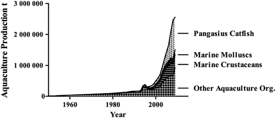
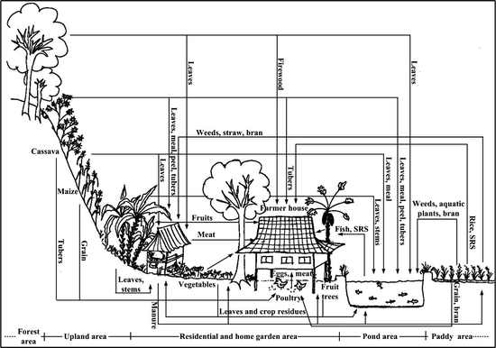

8.1 Role of Aquaculture in Vietnam
Aquaculture has a long tradition in Vietnam, predominantly in the lowlands and coastal areas. Since the establishment of the General Fisheries Department in 1960, the development of aquaculture has been one of its focal activities. For the next two decades, the Department’s activities were exclusively targeted at increasing fish production for domestic consumption, and were expanded to upland areas in conjunction with the expansion of paddy rice irrigation schemes in later years. Since 1980, the focus has shifted towards export production, with marine crustaceans initially the key product, and more recently Pangasius catfish (Pangasianodon hypophthalmus and Pangasius bocourti) (FAO 2006a). The direct and indirect governmental support provided to the aquaculture sector has resulted in the rapid growth of aquaculture production (Fig. 8.1), and the different policies developed are reflected in the production data for aquaculture in terms of the domestic supply and consumption of fish and seafood (Table 8.1). While the production of marine crustaceans and Pangasius catfish is mainly for export, the aquaculture of carp and tilapia species bred in freshwater is highly important in the supply of animal protein to the Vietnamese population at the national level. On a regional scale, in remote areas such as the uplands, the food supply from aquaculture can only be assured based on regional production, as fish are highly perishable, and with a generally poor infrastructure the cost of transporting goods from the lowlands may exceed the production costs.

Fig. 8.1
Aquaculture production in Vietnam – 1950–2009 (FAO 2011)
Table 8.1
Fish and seafood production and consumption in Vietnam – 1975–2005 (FAO 2012)
Year | Total population (million) | Fish and seafood (1,000 t) | Protein supply per capita per day (g) | |||||
|---|---|---|---|---|---|---|---|---|
Production | Import | Export | Domestic supply | Total | From animals | From fish and seafood | ||
1975 | 48.0 | 546 | 3 | 3 | 545 | 44.3 | 7.2 | 3.3 |
1980 | 53.3 | 559 | 2 | 3 | 557 | 45.9 | 7.1 | 3.0 |
1985 | 59.8 | 808 | 0 | 32 | 776 | 47.3 | 9.0 | 3.2 |
1990 | 66.2 | 939 | 0 | 57 | 881 | 49.2 | 9.9 | 3.5 |
1995 | 73.0 | 1,465 | 29 | 131 | 1,363 | 55.2 | 12.3 | 4.4 |
2000 | 78.7 | 2,097 | 12 | 408 | 1,701 | 60.9 | 15.8 | 5.5 |
2005 | 84.1 | 3,367 | 547 | 1,070 | 2,844 | 71.1 | 22.0 | 7.4 |
8.2 The Integrated Agriculture-Aquaculture System Used by Black Thai Farmers in Yen Chau District
The integration of fishponds into the agriculture system is common among the ethnic Black Thai, a group settled predominantly in the mountainous regions of Son La province in north-western Vietnam.
Within the overall framework of the Uplands Program, Steinbronn (2009) described the locally integrated agriculture-aquaculture system used in Yen Chau district in Son La province, a system characterized by the polyculture of carp and tilapia fish species, with the main species being grass carp. The ponds used are integrated into the overall irrigation scheme as well as into the farming system, within which crop residues, leaves and weeds, as well as manure from large ruminants and pigs serve as feed and nutrient inputs.
Although the system has features usually associated with intensive systems, such as being feed-based and involving frequent water exchange (Edwards et al. 1988), annual fish yields are relatively low, at only 1.5 tons per ha per year, as compared to other integrated carp polyculture systems in northern Vietnam which have reported yields up to 6.7 tons per ha (Red River delta) (Luu et al. 2002). Nevertheless, Steinbronn (2009) showed that aquaculture production contributes significantly to food security, generates income and plays a significant role in farmers’ livelihood strategies. The aim of her study was to provide a detailed and holistic understanding of the actual aquaculture system used and, in the second phase, to create tailor-made location-specific solutions that would have the potential to improve the livelihoods of farmers in an economically, socially and ecologically sustainable way. Data were collected between 2003 and 2006 based on interviews with fish farmers, village headmen and other stakeholders, as well as through an in-depth investigation of individually selected case study farms. Here, resource flows to and from the pond system were monitored quantitatively. The most important features of this aquaculture system are summarized in the following part of this section.
As stated in Chap. 1, more than half of the district’s population is of Black Thai ethnicity; settled in highland valleys and along the banks of rivers or streams, where paddy rice is cultivated. Rice is the major food crop in this region and is predominantly used for subsistence, while maize and cassava are the main rain-fed crops – planted on hillsides as cash crops. Bananas and occasionally cotton are planted in the upland fields, while fruits and vegetables are primarily produced in home gardens. The common livestock raised here include buffalos, cattle, goats, pigs and poultry. The mean farm size of the farmers interviewed for the study was around 1.7 ha, of which paddy fields accounted for approximately 11 % and ponds 9 %. Around 63 % of the households in the study area owned one or more ponds and produced fish.
Although aquaculture production has a long history in northern Vietnam (Edwards et al. 1996), aquaculture activities in the study area are a relatively recent phenomenon, and about half the farmers interviewed stated they had dug their ponds within the previous two decades.
The average size of the ponds was found to be around 800 m2, most being earthen. Dykes were concreted only rarely, but surrounded by trees such as bamboo or fruit trees. Some pond embankments also served as vegetable production areas. Almost all the farmers had placed tree branches in their ponds to prevent angling or the use of nets by thieves, as theft is a widespread problem, especially in those ponds located far from farmers’ houses.
Typically, ponds were constructed either in series or in parallel, and water flows through the ponds by means of gravity. The water in those ponds located in the valleys was usually supplied from the shared irrigation system. Activities carried out by individual farmers, such as the application of pesticides in paddy fields (Lamers et al. 2011) or even the practice of washing clothes in the canals (Alcaraz et al. 1993) may have had an influence on connected ponds in a negative way.
Fish are ecto-thermal animals, so water temperature strongly influences their growth and well-being. The ideal temperature range for fish culture is generally above 25 °C for most warm-water Asian fish (Cagauan 2001) and feeding activity tends to decrease or stop at temperatures below 20 °C (Ling 1977). Whereas the water temperatures in the study area are close to the optimum during the hot summer months, they are not satisfactory for fish growth in the dry, winter season (Diaz et al. 1998), especially in shallow ponds that do not have a source of fresh water during those periods (Dan and Little 2000). In addition to growth reduction, immune suppression characteristics have been revealed at the low water temperatures (Yang and Zuo 1997) occurring within the research area, and so the relatively cold winters in this area can limit fish production and even kill tropical species such as tilapia.
As water temperature increases, the dissolved oxygen (DO) content of water decreases due to the lower oxygen solubility, while at the same time the DO requirements of the fish increase. Oxygen represents the key limiting variable within the aquatic environment for fish growth, as the food intake of fish may be suppressed if their oxygen supply is limited (Ross 2000; Black 1998). In the study area, low DO levels are regularly observed at dawn, a time when fish are seen gulping at the pond surface, reflecting emergency respiration behavior.
Inflowing water carries DO into the system, but at the same time also carries sediments from bare and eroded upland fields. Especially during the hot, wet season, these sediments frequently color pond water red-brown, and during the study, the transparency of the water, as measured by the Secchi Disk Depth, was frequently found to be around 20 cm or even lower. Water is considered turbid when it has a Secchi Disk Depth lower than 30 cm (Sevilleja et al. 2001), and turbidity limits photosynthesis due to diminished sunlight penetration; thereby reducing the internal production of DO.
Fish in the study area are frequently stressed by low DO levels, and it is quite likely that the potential entry of pesticides and detergents, as well as sediments from the uplands, which may carry heavy metals (e.g., as a result of weathering of rocks and soils) into the pond system, may stress fish additionally. All these factors probably contribute to the relatively low fish yields in Yen Chau ponds.
Available water resources can become scarce, especially during the dry season. Usually, when paddy fields are irrigated and water is distributed among fields and ponds, the local irrigation authorities give priority to paddy fields, which in some cases leads to a complete halt in the supply of water to ponds. In combination with low rainfall, which was the case during the study phase, this leads to an enormous decrease in the water level, which negatively impacts on the fish. In severe cases farmers are forced to sell fish ahead of time.
In general, farmers practice multiple stocking. The main source of juvenile fish in the research area is a hatchery in Son La town, which was established by the government in the 1960s and was privatized in 2004. The most important fish species produced by the hatchery and reared by local farmers are grass carp, mud carp, mrigal, rohu, common carp, silver barb, the cichlid Nile tilapia and the filter feeders silver carp and bighead carp. During the study, farmers stocked between four and eight different fish species at an average fish stocking density of 1 fish per m2. The continuous supply of young fish is often not guaranteed, thus farmers’ stocking system often depends on the availability of fish rather than on long-term planning.
The local hatchery operators as well as farmers have observed a decrease in the quality of fish fingerlings over the last several decades, reporting low growth performance of the fish as well as a higher susceptibility of the fish to disease. There is some evidence that inappropriate management of the local hatcheries, such as the crossing breeding of fish without considering the degree of consanguinity, as well as the use of a generally restricted gene pool, has led to a genetic degeneration of fish stocks.
In terms of nutrients and resources, the polyculture ponds are well integrated into the overall farming system through manifold on-farm linkages between the fish, crops and livestock production activities. Figure 8.2 shows some important resource flows between the fish ponds and other production units on a typical farm. Usually, the leftovers from one production unit serve as inputs to other units, and both the production and the purchase of fish feed are rather unusual in this area. Paddy fields and fish ponds are closely linked to each other; for example, by a common irrigation system which leads water through paddy fields into ponds or vice versa. Farmers use weeds, aquatic plants and by-products from the paddy fields as fish feed, while the most important plant-derived feed inputs from the fields on the hillsides are leaves from banana, cassava and maize. Animal-derived pond inputs include manure from large ruminants or pigs. A detailed list of typical inputs to the fish ponds is given in Sect. 8.3.

Fig. 8.2
A topographical cross-section of the land in the study area and an example of nutrient flows between different farm activities (Steinbronn 2009). SRS self-recruiting species
According to the classification of integrated agriculture-aquaculture systems provided by Prein (2002), the system in the study area is plant based since mainly aquatic or terrestrial macrophytes are used as feed. The herbivorous grass carp, which is able to process raw plant material, is the major species that feeds on the applied green fodder in the study area. However, not all of the plant materials currently applied have been found to be suitable as feed for the grass carp. Some of the leaves and grasses applied in the study area showed a limited feed value (Dongmeza et al. 2009) and several feeds even turned out to have a negative impact on fish growth (Tuan et al. 2007; Dongmeza 2009; Dongmeza et al. 2010). Further, the feed base for the non-grass carp species in this pond system is rather limited. These topics are discussed in Sect. 8.3.
Farmers’ decisions regarding the use of a certain feed at a certain time of the year are often based on the availability of feed – such as the use of maize leaves during the growing period, the availability of labor – such as the use of rice bran during times of higher workloads, and current farming activities – including the use of weeds after hand-weeding of the crop fields has taken place. Fish diets vary between ponds, which can usually be explained by the ponds’ locations. Ponds located next to the farmers’ houses often receive more diverse feed inputs (e.g., kitchen waste or manure from nearby livestock pens) than those situated further away.
During our study, the average daily feed application was 196 kg of leaf material per hectare, which is a third of the feed amount used in intensive leaf-based aquaculture systems such as the Chinese mulberry dike-carp pond farming system described by Ruddle and Christensen (1993) or the Napier grass based tilapia culture described by Van Dam (1993). However, the feed conversion rate of leaf material used within the Black Thai polyculture was found to be 8.8 (feed DM), which is comparable to the Chinese leaf-based aquaculture system (Ruddle and Christensen 1993), but is magnitudes higher than in aquaculture systems that use higher quality feeds. The high moisture content and the bulky nature of many of the applied feeds means they require large amounts of labor for their collection and transportation; for example, during the wet season, farmers spend around 2 h per day just collecting and transporting fish fodder. However, in some cases, aquaculture activities can be combined with other farming tasks, such as the weeding of paddy fields which simultaneously produces feed for the fish.
Typically, farmers regularly catch aquatic products for their household consumption and then harvest larger amounts for sale at the end of the major rearing period, which usually lasts between 1 and 2 years. The produce is sold when the fish reach marketable size, when money is needed, when farmers have fixed harvest dates with the fish traders, or when water shortages or fish diseases force farmers to take action. In general, only big fish are caught, while small fish are kept in the ponds to allow further growth. During our study, average annual net production of the aquatic species, including ‘self-recruiting’ species (see below), was 1.54 ± 0.33 tons per ha, of which roughly two thirds was sold. Besides the cultured species, farmers also harvest naturally entering self-recruiting species which can be fish or other aquatic organisms such as snails, mussels, crabs or shrimps. These self-recruiting species as well as the low-priced fish species such as tilapia, mud carp and silver barb, are typically consumed within the household, while the higher-priced grass carp is often marketed. On average, self-recruiting species made up approximately 3 % of the total live biomass output of aquatic species during the study, whereas the grass carp accounted for over half (~52 %). The high proportion of grass carp in this pond system is a result of its ability to use the available on-farm crop residues as major feed inputs, as well as its ability to grow rapidly. It can also be sold at relatively high prices. Unfortunately, frequently occurring grass carp diseases have led to high fish mortality rates in the region in recent years, and around 70 % of fish farmers interviewed said they had had to cope with this problem in previous years, with some farmers reporting losses of their entire stocks. So far, the causative pathogen involved has not been identified. Furthermore, techniques applied by farmers in order to effectively prevent diseases or cure fish have so far failed. The grass carp disease is probably the most important restriction in this grass-carp-dominated aquaculture system, so within the framework of the Uplands Program, research aimed at diagnosing and preventing this disease, as well as treating it, has also been undertaken (see Sect. 8.7).
Despite the loss of grass carp, it has been shown that fish production is still a lucrative business due to the low cost of pond inputs – since usually no off-farm inputs are required except fish seed, the low opportunity costs for labor and the relatively high fish prices. That fish is a high-valued commodity can be shown when comparing the average local price for fish of approximately 1.2 USD per kg (year 2005) with the average monthly per capita income of approximately 11.8 USD in Son La province (GSO 2004; 1 USD = 18,000 Vietnamese dong).
The interviewed farmers reported that their mean income per household (with an average of 5 members) had been almost 831 USD for the year 2004, of which approximately 12 % was derived from sales of aquatic products. However, this percentage was calculated using data from those farmers who also did not sell any fish during the year under consideration.
In general, case study farmers produce fish for both income generation and home consumption. Farmers obtain a high share of their protein intake from aquatic products, and these products make an important contribution to farmers’ nutrient intake and especially their supply of animal protein (Steinbronn 2009). It is widely acknowledged that fish and other living aquatic resources can constitute an important component of the human diet; they are considered to be nutrient-dense foods which provide protein, amino acids, fatty acids, minerals and vitamins (Prein and Ahmed 2000). While in the past fish production in the study area was predominantly for subsistence purposes, the system has now become increasingly market-orientated, with fish the third most important product for the farmers in terms of income generation after maize and cassava.
The demand for fish in the local market in Yen Chau cannot currently be completely satisfied by the local fish production alone. In the years 2003–2005, a road was upgraded to connect the north-western mountains with the country’s capital Hanoi. As a result, fish from the more intensive aquaculture areas in the lowlands, which were (and are) more economically developed than the mountainous region, began to flood the local markets. This development can be expected to continue, and it is likely farmers will be unable to compete in this market in the future. In order to produce fish in a sustainable way, the current system must be improved so that local fish production levels can be increased.
Vietnam is a very dynamic country in terms of its level of agricultural development, but its inhabitants will need to adapt quickly and flexibly in order to deal with frequently changing markets. Currently, aquaculture is only a minor component in the local farming system, but its importance might increase with greater farm specialization and market orientation, and it has been widely recognized that encouraging the further development of aquaculture production can contribute in a sustainable manner to food security and poverty alleviation in developing countries (Tacon 1997; Edwards 2000; Prein and Ahmed 2000).
8.3 Current and Potential Feed Resources for the Local Aquaculture System
One of the factors mentioned in Sect. 8.2 as contributing to the low level of fish production in these ponds is the limited feed base, both for the grass carp and for the non-grass carp species. The current and potential feed resources for these species are discussed below, with the data presented based on interviews with local stakeholders and on an in-depth investigation into individual ponds during the period 2003–2006 in Yen Chau district (Steinbronn 2009).
The feed types currently used in the research area consist mainly of plants, either terrestrial or aquatic, collected from the wild or of the leftovers from cultivated crops. The typical feed types used are shown in Table 8.2. Important plant-derived inputs to ponds include cassava leaves, chopped cassava tubers, cassava peelings and fermentation residues. From banana plants, the leaves and young or soft parts of older (pseudo-) stems are also used, as are the leaves from maize and bamboo plants and occasionally from mulberry and vegetables. Additional inputs include the by-products of rice cultivation, such as rice bran and broken rice, as well as weeds and aquatic plants. The weed from paddy fields most commonly used for fish feed is barnyard grass (Echinochloa crusgalli). Animal-derived pond inputs include manure from large ruminants or pigs, of which buffalo dung is by far the most important.
Table 8.2
Plant products used as fish feed (Steinbronn 2009)
Crop or plant type | Specification |
|---|---|
Cultivated crops
| |
Cassava (Manihot sp.) | Leaves, tubers, peel, meal, fermentation residues |
Banana (Musa sp.) | Leaves, chopped stems |
Maize (Zea sp.) | Leaves, meal |
Rice (Oryza sp.) | Bran, blades/straw, sorted grains, husks, fermentation residues |
Bamboo (Bambusa sp.) | Leaves |
Mulberry (Morus sp.) | Leaves |
Fodder grass | Napier grass (Pennisetum purpureum) |
Vegetables | Leaves and stems from e.g., water dropwort (Oenanthe javanica), sweet potato (Ipomea batatas) and water morning glory (Ipomea reptans) |
Fruits | Fruits and leaves from e.g., figs (Ficus glomerata) and tamarind (Tamarindus indica) |
Native plants
| |
Terrestrial plants | e.g., Alternathera sessili, Chromolaena odorata, Commelina nudiflora, Cyperus imbricatus, Cyperus rotundus, Digitaria timorensis, Echinochloa crusgalli, Eclipta prostrata, Kyllinga monocephala, Sagitaria sagitifolia, Sporobolus indicus, Urochloa reptans and Wedelia calendulacea
|
Aquatic plants | e.g., Azolla imbricata, Lemna paucicostata, Pistia stratiotes and Salvinia natans
|
Quantitatively the most important feed inputs (on a dry matter (DM) basis) used during the study period were fresh cassava, banana and maize leaves, weeds collected from the paddy fields and buffalo manure.
Most of the above feed types cannot be consumed directly by humans; however, through their application in the ponds, they can be converted into high-value animal protein. Grass carp is believed to be the major species that feeds on the applied green fodder, accounting on average for 80 % of the applied feed material used (fresh matter, FM) at the case study farms, as this species has to consume large quantities of plant material in order to obtain the nutrients required (Tan 1970; Cui et al. 1992, 1994). The gross relationship, in the case study ponds, between the amount of green fodder applied (FM) and the net gain in grass carp biomass (FM) showed that 1 kg of grass carp was produced when approximately 68 kg of grass and leaf material were applied to the pond.
Table 8.3 shows the gross chemical composition of some typical feeds used in the study area – data partly published by Dongmeza et al. (2009). Most of the feeds applied here have high moisture and fiber content and relatively low protein content. Dongmeza et al. (2009) found that the general quality of the applied feeds was rather poor; however, certain feeds such as cassava and mulberry leaves contained high crude protein contents (20–30 %) (Dongmeza et al. 2009), though high protein content does not necessarily indicate a better quality diet, as demonstrated by authors such as Shireman et al. (1978) and Tan (1970). Low fiber content is also an important factor, and the digestibility coefficients for crude protein and gross energy; for example, decline significantly with increased fiber content of the plant feed (Hajra et al. 1987). As well as the gross energy and chemical composition, the presence of anti-nutrients may also influence fish growth (Francis et al. 2001a, b, 2002). Banana leaves; for example, contain tannins and saponins, and cassava leaves contain cyanides, tannins and saponins, which show haemolytic activity (Dongmeza et al. 2009).
Crop | Parts analyzed/specifications | DM % of FM | CP % of DM | EE % of DM | NDF % of DM | ADF % of DM | Lig % of DM | CA % of DM | GE MJ kg−1
|
|---|---|---|---|---|---|---|---|---|---|
By-products and leaves from cultivated crops
| |||||||||
Cassava | Leaves without petioles (long-term variety) | 28.1 | 23.4 | 8.7 | 29.5 | 17.8 | 6.7 | 7.6 | 21.0 |
Cassava | Leaves without petioles (short-term variety) | 28.1 | 25.9 | 7.9 | 27.9 | 17.6 | 7.4 | 6.8 | 21.0 |
Cassava | Peel (long-term variety) | 38.0 | 4.0 | 0.6 | 23.4 | 18.6 | 12.1 | 6.9 | 17.1 |
Cassava | Tubers (long-term variety) | 78.6 | 1.4 | 0.3 | 7.5 | 2.0 | 0.5 | 2.5 | 16.4 |
Banana | Leaves without leaf veins | 20.5 | 16.1 | 5.4 | 49.9 | 28.8 | 6.1 | 7.9 | 19.5 |
Maize | Leaves | 36.7 | 13.0 | 2.6 | 56.1 | 34.9 | 6.6 | 11.0 | 17.2 |
Maize | Meal | 86.9 | 10.9 | 6.5 | 13.6 | 3.7 | 0.3 | 1.4 | 20.9 |
Rice | Brana (dry) | 89.0 | 7.7 | 6.5 | 53.1 | 40.3 | 17.2 | 13.0 | 18.1 |
Bamboo | Leaves with soft stems | 47.0 | 16.0 | 3.5 | 61.5 | 39.3 | 14.3 | 13.8 | 17.7 |
Mulberry | Leaves with soft stems | 29.6 | 25.3 | 3.0 | 22.5 | 15.4 | 3.9 | 10.8 | 17.4 |
Napier grass | Blades of grass | 19.8 | 16.3 | 2.9 | 60.5 | 36.8 | 6.6 | 13.6 | 16.0 |
Sweet potato | Leaves and soft stems | 15.7 | 17.4 | 2.9 | 37.4 | 24.6 | 4.5 | 10.8 | 17.5 |
Native plants
| |||||||||
Barnyard grass | Blades of grass, contains also flowers | 19.2 | 14.1 | 2.5 | 59.3 | 38.7 | 6.3 | 9.9 | 17.6 |
Mixed weedsb
| Mix of weeds | 14.6 | 15.6 | 2.3 | 62.4 | 35.7 | 9.5 | 13.3 | 16.9 |
So far, with the exception of a few items such as duckweed, little information has been published regarding the types of feed used for grass carp in the study area. Within the framework of the Uplands Program, feeding trials were carried out in aquaria and respirometry systems at the University of Hohenheim and in an aquarium system at the Hanoi University of Agriculture. In the experiments at the University of Hohenheim, grass carp were either fed a standard diet (control group), with the standard diet supplemented with dried cassava leaves or weed mixtures (Dongmeza 2009), with leaves from banana or bamboo (Dongmeza 2009), or with the leaves of maize or barnyard grass (Dongmeza et al. 2010). In all these trials, the leaves and weeds used, with the exception of the maize leaves, came from the farmers in Yen Chau. In a feeding trial at Hanoi University of Agriculture, grass carp fingerlings were fed solely on fresh banana leaves, barnyard grass or Napier grass (Tuan et al. 2007).
In the experiment carried out by Dongmeza (2009), grass carp that were supplemented with banana leaves had a significantly higher body weight gain compared to the control group fed the same amount of standard feed only. In contrast, the growth and feed conversion rate for grass carp supplemented with dried cassava leaves was generally lower in the cassava-supplemented fish as compared to the control group, even though these fish received leaves in addition to the same amount of standard diet as the control group and; thus, a larger amount of nutrients (Dongmeza 2009). In this case, the authors attributed the lower level of growth to the intake of anti-nutrients. Lower growth rates were also observed in grass carp supplemented with either bamboo leaves, barnyard grass or mixed weeds from the paddy fields, as compared to the respective control groups (Dongmeza 2009; Dongmeza et al. 2010). Groups of young grass carp (~ 20 g) fed solely on barnyard or Napier grass showed low fish growth rates and many of the fish died (Tuan et al. 2007). Tuan et al. (2007) concluded that these grasses are probably not able to support the growth of young grass carp when they are the sole source of food.
Although most of the feed supplied to the ponds in the study area is intended for grass carp, the observed growth rates were rather low, with an average specific growth rate of only 0.24 %. While some of the feeds appear to exhibit good potential as supplementary feed, such as banana leaves and duckweed, others such as bamboo leaves, cassava leaves, barnyard grass and mixed weeds probably do not contribute significantly to the growth of fish.
While the feed items that have been discussed so far are most likely eaten almost exclusively by the herbivorous fish, the by-products of cassava, maize and rice (other than the leaves) are thought to play a major role as supplementary feed for the other fish species in the present system. In addition, most of these species are also known to feed on the natural food available in the ponds.
Quantitatively, the most important supplementary feed types in the case study ponds were rice bran and cassava peel. The rice bran was usually of low quality and had low crude protein content, and the peel from cassava tubers was found to be low in protein and fat and contained considerable amounts of fiber and lignin as well as cyanides (Dongmeza et al. 2009). Although tilapia, common carp, mud carp and mrigal are known to be able to make use of agricultural by-products (FAO 2006b), it is unlikely in the present case that either of these feeds contributed significantly to fish growth.
In the study area, the availability of livestock manure for pond use is limited by a low number of livestock and the competition with other use types such as paddy rice or gardening within the farm household. Manure from buffalo was by far the most commonly applied manure in the case study ponds and accounted on average for 94 % of the total. The dry matter (19.2 % of FM) and nitrogen (N)-content (1.4 % of DM) of the buffalo manure used in the case study ponds corresponded to those reported by Edwards et al. (1994b, 1994a, 1996). Due to the low N-content of buffalo manure, it was necessary to apply high quantities to ponds in order to reach the recommended N-rate of 4 kg N ha−1 day−1 (Edwards et al. 1994b, 1996). The daily loading rates in the case study were lower than 200 g N ha−1, and thus far below these recommendations. In addition, the relatively high water exchange in the ponds limited the effect of fertilization.
Usually, higher fertilization is associated with an increase in plankton production (Nandeesha et al. 1984; Boyd 1982); however, the amount of plankton biomass in the case study ponds was generally low, which can be attributed to an inappropriate water management system with high flow rates, as there tends to be an inverse relationship between water flow rates and the abundance of plankton in the study area. On one side, the high flow rates in the study area caused a flushing-out of the phototrophic top water layer, whilst on the other side, they increased the turbidity and inflow of eroded particles, which limited the penetration of sunlight.
The current aquaculture system focuses on grass carp, but grass carp production has become a risky venture due to the occurrence of diseases that cause high fish mortality rates (see Sect. 8.2). As long as the diseases identified cannot be prevented or treated, it seems unwise to focus so much labor and other resources on this fish species. Further, according to the local fish traders, the local production of common carp, mud carp, mrigal and rohu is not sufficient to supply the demand of the Yen Chau market. Increasing the portion of common carp may therefore be a promising alternative for the farmers. Common carp generally fetch similarly high prices on the local market as grass carp, and may be reared by farmers themselves, which may save money and further help them to become more independent of the unreliable seed supplies provided by the hatcheries. Therefore, Steinbronn (2009) proposed a “non-grass carp-dominated system” with a species combination that favors common carp. Despite this, this proposed system still advocates that a certain number of grass carp should be stocked (e.g., 10 %) in order to utilize the abundant leaf and grass material and to provide fish feces for fertilizing the pond. Here, small amounts of green plants of comparatively high nutritional quality should be used to supplement the feed. Furthermore, grass carp stocked at low densities have shown extremely high growth rates in polyculture ponds, as investigated by Sinha and Gupta (1975).
Under the proposed non-grass carp-dominated system, the feed base of the non-grass carp species would be improved through: (a) an increase in the availability of natural food and use of a proper water management system, and (b) an improved supplemental feed based on local products such as maize and cassava. Tuan (2010) tested different supplemental diets for common carp based on locally available resources such as meal from cassava, maize and soybean, as well as rice bran. In a feeding trial, common carp were fed either a control diet (with fishmeal being the major protein-source) or a diet in which 25 %, 50 % or 75 % of fishmeal was replaced by these plant-derived resources. Even though fish feeding on the control diet showed the highest growth rates, the feed costs per fish produced were lowest in the diet in which 75 % of the fishmeal was replaced by local products. This feed, in conjunction with a modified pond management system, was tested in field trials in collaboration with the Yen Chau farmers (Pucher et al. 2010a). The results of these trials are presented in Sect. 8.5.
The use of earthworms as a fish feed ingredient has also been found to be a practicable alternative for farmers. Earthworms have high protein content (71 % of DM) and can contribute to a significantly improved growth rate in common carp (Tuan 2010; Pucher et al. 2012b). The use of earthworms is discussed in Sect. 8.8.
8.4 Design of an Improved Aquaculture System for Small-Scale Farmers
Based on the above analysis of the problems and limitations experienced within the aquaculture system currently practiced by the Black Thai farmers in Yen Chau district, and the possibilities outlined, an improved system was designed. The goals of this system were to reduce the cultural dependency on the use of disease-prone grass carp, and to increase income generated from fish culture without reducing the contribution of the pond system to household protein supply. The only species that can catch and even exceed prices on the market similar to those obtained for grass carp is the common carp (Steinbronn 2009). The common carp is reared in many tropical, subtropical and temperate zone countries around the globe, predominantly in semi-intensive systems. In these systems, natural food is enhanced by fertilization and/or liming of the pond, and the natural food is supplemented by feeds typically lower in protein content than the physiological requirements of the fish (De Silva 1995), making the fish feed cheaper for balanced diets (Hepher and Pruginin 1981). Farmers in Yen Chau area have available a number of potential feed ingredients from other farming activities, such as rice bran and maize; however, in order to achieve efficient fish production levels with such a low-cost feed, natural food from the pond must supply sufficient protein and essential micro-nutrients. This can only be achieved in ponds with controlled water exchange, which is done to avoid the washing-out of nutrients supplied in the form of organic or inorganic fertilizers. Such nutrient-rich ponds also provide a suitable environment for tilapia and small, self-recruiting fish, mollusks and crustacean species to grow, which then contribute to home consumption. Therefore, the suggested set of innovations are to control water flow through the fish pond by uncoupling the pond from the irrigation systems, to dig canals around the pond in order to catch run-off water from the adjacent upland areas, apply lime, organic (manure) and inorganic fertilizers, modify the species composition of the fishpond – with fewer grass carp and more common carp, and apply supplemental feeds at least partly based on on-farm or locally available resources.
8.5 Implementation and Evaluation of the Modified Pond Management System
A modified, semi-intensive polyculture system centered on common carp was designed, based on an investigation carried out into the traditional aquaculture system used by the Black Thai farmers (Steinbronn 2009), a determination of the nutritional value of local resources such as fish feeds (Dongmeza 2009) and the formulation of cost efficient supplemental feeds for common carp, made mainly from locally available resources (Tuan 2010).
8.5.1 Implementation of the Modified Pond Management System
The system was tested under field conditions in the Black Thai farmers’ ponds in the research area (Pucher et al. 2010a, b). The main modifications made are listed in Table 8.4 and are described in the following section.
Table 8.4
Modifications made to the pond aquaculture system used for common carp, based on semi-intensive polyculture practices and corresponding levels of financial or labor inputs. Level of acceptance by farmers are also shown (Acharya et al. 2011 and own observations)
Activity | Reason | Additional financial/ labor inputs | Level of acceptance by farmers |
|---|---|---|---|
Drying pond | Basic hygiene | Medium | Low |
Removing mud | Basic hygiene | High | Low |
Minimize anoxia | |||
Installation of pipes | Water flow control | Low | High |
Liming | Pond hygiene | Medium | Medium |
Reduction of turbidity | |||
Circulating channel | Water flow control | Medium | Medium |
Reduction of turbidity | |||
Greening dikes | Reduction of turbidity | Low | High |
Common carp as main species | Low disease risks | Medium | Medium |
Record book | Basic economic calculation | Low | Low |
Dynamic water management | Increase of natural feed resources | Medium | Medium |
Minimize anoxia | |||
Chemical fertilization | Increase of natural feed resources | Medium | Medium |
Minimize anoxia | |||
Regular pellet feeding | Improved fish nutrition | High | Low |
For reasons of pond hygiene, systematic aquaculture pond preparation practices had to be introduced. Steinbronn (2009) described the traditional Black Thai farmers’ aquaculture as a pond management system with irregular catch and stocking processes. Farmers caught low value fish for household consumption, wherein stocking times and harvesting of the ponds were dependent on the current workload and financial situation, and number of fingerlings provided by the traders. Complete harvests were performed rarely and only a few farmers drained all the water from their ponds. Consequently, farmers did not know the species’ composition, stocking density or survival rate of the fish in their ponds. Both the gross accumulation of organic material and the sedimentation of particles derived from the eroded soils were frequently observed and reported by farmers in the research area. Under the modified pond management system, researchers recommended that farmers completely drain the ponds after each production cycle, plus remove accumulated sediments and indigestible feed fractions in order to reduce anaerobic bacterial activity (Sugita et al. 1992), as well as reduce oxygen consumption through decomposition (Barik et al. 2000), especially that caused by the intensive culture of grass carp. The ponds’ bottoms then had to be dried out and quick-lime applied.
For the implementation of this semi-intensive pond aquaculture system, several structural modifications to the ponds were recommended. In the traditional ponds used in northern Vietnam, water from all neighboring water sources (channels, rice paddies and ponds) flows into the ponds without any control, either over the water which flows through openings specially created for the purpose, or over water flowing in passively through cracks and holes in the dikes (Reinhardt et al. 2012), or even as run-off from surrounding gardens, fields and forests. Tuan et al. (2010) reported a yearly run-off of 2.5 % of precipitation for the period May 2009 to April 2010, and an average transport of 6.6 kg (minimum 2.1 kg to maximum 13.2 kg) eroded soil per m2 per year for upland maize fields, with especially high erosion occurring in the spring time when there was very little soil cover and heavy rains occurred. For rice paddies in the research area, Schmitter et al. (2010, 2011) reported changes in soil fertility related to the distance of the water inflow in relation to paddy rice cascades, and explained these differences in soil fertility and corresponding grain yields as being due to sedimentation of the eroded particles from the uplands. While eroded particles have a yield increasing effect in rice paddies, Steinbronn (2009) reported that these particles also inhibit primary production in ponds by impairing the penetration of sunlight, even though in her study both the particles and the water that carried them brought in nutrients and organic matter. Lamers et al. (2011) reported that in their study both ground and surface water contained several pesticides that had been applied in the rice paddies and that, under existing practices in the research region, reached levels that posed serious environmental problems. As farmers tend to apply pesticides mostly in their rice paddies, negative impacts on fish, zooplankton, phytoplankton and zoobenthos tend to be most pronounced in water flowing from these areas, and can thus make fish consumption risky for human health.
In order to avoid the negative effects of eroded particles coming from surrounding upland fields and pesticides from neighboring paddy fields, our study ponds, using the modified management system, were isolated from external water flows. The dikes used needed to be strengthened against flooding caused by heavy rains (Schad et al. 2012), and cracks and macro pores in the dikes had to be sealed. Ponds were equipped with proper pipes for controlling inflows and outflows, with the outlet pipe situated at the deepest point in the pond so that the water could be completely drained for harvests and drying purposes. The constant water flow-through system was replaced by the periodic exchange of pond water, and channels were installed around the ponds to inhibit the inflow of run-off waters from surrounding upland fields. A persistent ground cover was established to stabilize the pond dikes and reduce the erosive effects of heavy rain. Such ground cover for upland fields and pond dikes not only minimizes erosion but also increases the feed base for grass carp and ruminants in the dry season, when green fodder is limited.
The aims of the water management scheme were to reduce the turbidity of the pond water, thus enhancing primary production, and to reduce the loss of nutrients caused by flushing out. Every 2–4 weeks, water was fed into the ponds to compensate for seepage, and to minimize turbulence in the pond water, accelerate the sedimentation of suspended particles and minimize the flushing out of nutrients. Only clear and clean water was fed into the pond; externally present water was not used during rains in order to inhibit the inflow of water containing eroded soil particles. Farmers apply pesticides on their fields in response to the weather, the occurrence of pests, based upon recommendations from the national extension service and on the advice of neighbors or family members. As a result, water was only used to fill ponds at times when no pesticides had been applied above the ponds.
Steinbronn (2009) reported poor growth among non-herbivore fish species under traditional pond management systems, and during net cage trials in the research area Yen Chau district, Pucher et al. (2011a, b) also showed that traditional pond aquaculture practices were not appropriate for raising common carp due to a limited natural food base. In this study, pond productivity and natural food availability was shown to be not sufficient to raise common carp under the traditional fertilization techniques used and with ruminant manure used in combination with constant water flow-through. The common carp lost weight without supplemental feeding and grew only slowly under supplemental feeding – by 3 % of their body mass each day. However, the fish grew better when chemical fertilizers were applied in stagnant water (Pucher et al. 2010a, 2011a).
To enable primary and secondary production in water with reduced turbidity, ponds were fertilized using locally available resources. In certain regions of Son La province with good market access, Black Thai raise locally adapted pig breeds as livestock for income generation (Lemke et al. 2006), and Kumar and colleagues reported pig manure to be a better organic fertilizer than ruminant manure (2004a, b, 2005b), while in our research area (Yen Chau district), Steinbronn (2009) reported pig manure to contain less crude protein than ruminant manure due to the poor feed base of pigs. As only a few households kept pigs, pig manure was applied in small quantities during trials in the research area, with organic fertilization performed through the application of cow and buffalo manure and through the stocking of grass carp (stocked at a density of 10–20 % of the carp polyculture). Several researchers’ studies reported that stocking grass carp had a significant impact on the fertility of ponds by enhancing decomposition rates and directly releasing nutrients from the undigested leaf parts used as feed (Tripathi and Mishra 1986; Kumar et al. 2005b; Pomeroy et al. 2000). Urea and single super-phosphate, which are available in the region and used by farmers in the upland fields, were also used in these studies, with organic and chemical fertilizers applied at an N/P ratio of about 3:1. The amounts of fertilizer used were varied according to the on-farm availability of organic fertilizer, as well as current ammonia, total nitrogen and total phosphorus concentrations in the pond. The total amounts applied were calculated to provide 1.0 ppm total nitrogen and 0.5 ppm total phosphorus (Kumar et al. 2004a).
Under the traditional carp polyculture system of northern Vietnam, grass carp has been reported to be the main species (Steinbronn 2009; Kumar et al. 2005a, b; Tripathi and Mishra 1986); grown to augment the internal nutrient recycling processes of the ponds, and can be raised cost efficiently with the use of on-farm resources (Kumar et al. 2005b; Pomeroy et al. 2000).
Farmers in the research area reported the occurrence of a disease specific to grass carp after 1996 (Steinbronn 2009), one which led to mass mortalities in the region. In order to reduce the risks of farmers being impacted by the grass carp disease, grass carp was replaced almost entirely by common carp within the traditional carp polyculture system, and was then stocked only as a supplementary species. In this region, the common carp is considered a suitable principal species, because it is well accepted as food and fetches a good price on the local market, a price similar to that of grass carp. Farmers are familiar with its habits and ecological requirements and it is readily available from local traders as fingerlings for stocking, or can be reproduced naturally in farmers’ ponds. Ponds were stocked at a density of 1.5 fish per m2 as recommended by Rahman et al. (2008b), with common carp eventually accounting for around 50 % of fish stocked in the area. Other carp species (such as silver carp, bighead carp, mud carp, grass carp) and also tilapia – all important as a supply of animal protein for domestic consumption, were stocked to similar levels.
8.5.2 Implementation of a Modified Feeding Regime
The common carp is an omnivorous fish and prefers to scavenge pond bottoms in search of benthic organisms like oligochaetes, nematodes and insects, but is also capable of digesting zooplankton, plant derived diets and detritus (Rahman et al. 2008a). Common carp in carp polyculture systems has been reported to increase the bio-availability of nitrogen and phosphorus through its scavenging activities, which increase bioturbation and recirculate sedimented nutrients (Rahman et al. 2008b; Jana and Sahu 1993; Milstein et al. 2002). This stimulates primary production (Chumchal and Drenner 2004) and the accumulation of nutrient in plankton (Rahman et al. 2008a), but also increases turbidity by recirculating sedimented material (Chumchal et al. 2005).
Due to the ability of common carp to utilize carbohydrates for their energy requirements (Kaushik 1995; Ufodike and Matty 1983) and to digest plant-derived proteins for their anabolism (Degani et al. 1997), only a small amount of animal derived protein is required in the diet of common carp to supply essential amino acids. Sulphur containing amino acids are most essential for fish, as the acids are not abundant in plant proteins and cannot be synthesized. In all animal diets, the most costly and limiting ingredient is animal derived protein, due to its high essential amino acids content. As a consequence, a challenge in the future will be to formulate feeds in which animal derived proteins are replaced by plant proteins or other sources of protein, and to increase the utilization of energy derived from lipids and carbohydrates in the feeds.
In intensive aquaculture, fish diets must be formulated to meet all requirements, as the feed provided is the sole source of energy and anabolic units for the fish. In semi-intensive fish culture systems on the other hand, the supplemental feed used should be formulated to increase the utilization of the natural food items by supplying limiting macro- and micro-nutrients. For common carp under semi-intensive feeding regimes, energy has been shown to be the first growth limiting factor (Pucher et al. 2011a, b; De Silva 1995) and must be supplied by supplemental feed to reduce the utilization of animal derived proteins from natural food resources (zoobenthos and zooplankton) as an energy source. The second limiting factor is the quality of protein in the supplement feed.
Artificial fish feeds can be offered in different forms: dough, powder and sinking or floating pellets (Tacon and De Silva 1997). Dough and powders require less technical input and are cheap to prepare, but their use is often associated with high losses of nutrients via leaching and a general loss of feed due to ineffective feed uptake. In contrast, the preparation of sinking and floating pellets demands a higher technical input but enables more effective feed uptake by the fish and results in less nutrient leaching into pond water. The use of pellets also means that all the required nutrients are delivered at the same time, which is not possible using powders and dough where single feed ingredients are suspended in the water or float on the water’s surface. In the study area of Yen Chau district, we tested sinking pellets as supplemental feed. Production of the pellets required a medium level of technical input and the pellets sank down to the bottom of the pond, which suited the feeding behavior of the target species (common carp) and partly prevented other species from consuming the supplemental feeds.
It is essential for resource-poor farmers in rural upland areas to use feeds for aquaculture that help give the highest level of profit. The most profitable feed formulation is not necessarily the one that leads to the highest growth rate, since more digestible ingredients are often more expensive. Given that fishmeal prices continue to rise in the rural markets of Vietnam, one study feed with an effective fish meal replacement (Tuan 2010) was introduced to cooperating farmers in the research area of Chieng Khoi commune and tested in pond trials. Abdelghany and Ahmad (2002) evaluated a daily supplemental feeding rate of 2.7 % of total fish biomass in a polyculture stocked with more than 50 % omnivorous fishes, and at a stocking density of 2.2 fish per m2, which was considered optimal for fish and income production. In Chieng Khoi commune, Pucher et al. (2010a, b) adjusted the amount of feed offered to 6 % of the common carp biomass per day each month, under the assumption that growth of the common carp would be proportional to the growth of all the species present. Pretests showed that it was not possible to catch a representative number of all stocked species without significantly disturbing pond turbidity; therefore, the primary species, common carp (50 % of all stocked species), was used as an estimate of the total fish biomass.
In Chieng Khoi commune, farmers were advised to split the daily feed into two portions; once in the morning and once in the evening (Rahman and Meyer 2009), but when the farmers were very busy they could only feed the fish once a day. Feeding in the evening only was thus recommended, because water oxygen levels in the morning tend to be low.
In our study in Chieng Khoi district, the method of application used for leaves as feed for grass carp was also modified. It had been observed that the farmers’ normal practice was to feed cassava, banana and maize leaves complete with stems, branches and middle ribs, introducing large amounts of indigestible organic matter into the pond, and thus reducing the oxygen level by decomposition processes. To reduce the organic load experienced at the bottom of the ponds, farmers were advised to feed only those parts of the leaves known to be eaten by grass carp.
In order to improve the ability of farmers to calculate the investments and benefits of aquaculture as a farming activity, they were given a book in which they recorded all body masses, as well as the amounts and costs of inputs such as fingerlings, feeds and fertilizer, labor, time and water flows, plus outputs such as the number and mass of fish caught and other pond products. Dead fish or abnormal behavior among fish was also recorded. This practice gave farmers an overview of the input–output data, current stocking densities, species composition, and the survival and growth rates of different species, and so helped them to appreciate the financial benefits of aquaculture as a farming activity. Dung and Minh (2010) recommended that this kind of simple record book should be used in all farming activities, so that farmers can compare different land uses and farming activities and use it as an aid to their decision-making.
8.5.3 Evaluation of Implemented Modifications in the Pond Management and Feeding Regime
Ponds under the traditional management system had a high variability in water quality (Pucher et al. 2010a; Steinbronn 2009) which was greatly influenced by the surrounding land use types and also water exchange. Heavy rain storms in particular rapidly changed the water quality, resulting in higher turbidity, and high ammonia levels sometimes above 1 mg NH4-N l−1 in the spring and autumn. In addition to introduced sediments, Steinbronn (2009) noted that there was a tendency for water inflow rates and plankton densities to be negatively correlated because ponds were designed with overflow as the only water outflow, meaning water was only ever removed from the top layer of the pond. However, this top layer is the most productive water layer of a pond as it contains most of the phototrophic plankton and is thereby the main source of oxygen and the base of pond productivity.
Depending on the source of water, the surrounding land use and soil types, ponds in the research area showed a high variability in terms of water quality, natural food availability and hence in the level of fish production and financial benefits to be gained from the aquaculture activities. Unsuitable water quality elements such as water temperature (Sifa et al. 2002; Cagauan 2001; Black 1998; Alcaraz et al. 1993; Chervinski 1982), water oxygen (Black 1998; Ross 2000) and water pH (Svobodova et al. 1993) levels were shown to have a negative effect on fish growth. Especially within extensive and semi-intensive aquaculture systems, fish growth is correlated with the availability and abundance of natural food resources (Rahman et al. 2008b; Muendo et al. 2006; Schroeder et al. 1990; Spataru et al. 1983; Kolar and Rahel 1993; Pucher et al. 2011b), and both water quality and the availability of natural food are primarily or secondarily affected by the suspended particle load. During the research in Yen Chau district, ponds with maize and cassava fields on yellow soils in the watershed above and fed by rain water, showed a distinctly higher suspended solids load than ponds located on the rice paddy plateaus and fed by reservoir water. Under the modified pond management system, a reduction in turbidity was obtained, leading to higher primary production activity levels and with higher oxygen production peaks during the day (Pucher et al. 2010a). Oxygen limitations occurred in the morning, similarly to those observed under the traditional pond management system. This suggested better primary production activities, resulting in higher oxygen production during the day but also higher oxygen depletion at night. Nevertheless, higher primary production levels stimulated by fertilization and reduced water flow-through resulted in a greater abundance of natural food resources and provided more support for growth, especially of the filter-feeder fish species such as silver carp, bighead carp and tilapia. Also, grass carp under the modified pond management system showed a higher growth rate than under the traditional system, indicating a better feed base of natural food due to lower stocking densities (Sinha and Gupta 1975) and consumption of pelleted supplemental feed which was intended to feed common carp. All stocked species under the semi-intensive pond management system, such as the common carp, grass carp, silver carp, bighead carp and tilapia, showed significantly higher specific growth rates (in %), of 2.6 ± 0.2, 2.4 ± 0.3, 2.5 ± 0.1, 2.9 ± 0.2, and 3.4 ± 0.6 respectively, and when compared to those under the traditional management system, which were 1.8 ± 0.1, 1.9 ± 0.7, 1.7 ± 0.0, 2.0 ± 0.0, and 2.5 ± 0.4 respectively (Pucher et al. 2010b). Net production (in kg/1,000 m2) over the 7 months of the trial under the traditional pond management system was 87.4 ± 43.6, with 36.8 ± 18.8 for grass carp, 4.3 ± 5.5 for common carp, 16.7 ± 3.8 for silver carp, 8.3 ± 4.4 for bighead carp and 16.1 ± 15.4 for tilapia (Pucher et al. 2010a, b). Net production (in kg/1,000m2) under the semi-intensive management system was 227.5 ± 41.6, with 45.5 ± 11.8 for grass carp, 35.8 ± 12.7 for common carp, 60.8 ± 2.8 for silver carp, 39.6 ± 13.0 for bighead carp and 35.7 ± 21.9 for tilapia. All fish species, except grass carp and tilapia, had significantly higher production levels under the semi-intensive than the traditional pond management system. The level of production for the common carp was relatively low under the semi-intensive management system, which could be explained by a low recovery rate for the fish of around 38 %. Under the traditional pond management system, the recovery rate for the common carp was around 20 %, and; therefore, even lower. As under the semi-intensive pond management system, the average specific growth rate for the common carp was 2.4 %, while under the traditional pond management system it was significantly lower at1.9 %. This may have been caused by high inter-specific and intra-specific competition for the supplemental feed pellets and natural food resources, especially for the macro-zoobenthos. It may also have been caused by a reduction in the genetic variability of the fish hatchery populations due to inbreeding, and this was mentioned by farmers and has been described as typical for rural hatchery brood stock populations (Kohlmann et al. 2003; Eknath and Doyle 1985) resulting in a low growth potential or a suppression of the immune defense system. In Son La province, most fish seed is produced either in the Son La city hatchery or transported from hatcheries in Bac Ninh province (approximately 300 km away from the research area). In contrast to reports from local farmers in Son La province (Steinbronn 2009; Thai et al. 2006), Thai et al. (2006) found that the common carp population at the Son La city hatchery exhibits greater genetic diversity than the three experimental lines at the Research Institute for Aquaculture No. 1 (RIA 1), or in the wild populations of Vietnamese common carp. Thai et al. (2006, 2007) attributed this finding to the successful dissemination of imported genetically improved stocks. The findings of Thai et al. (2006, 2007) indicated that the poor growth of common carp reported by farmers in Son La province was caused by a poor feed base and low water quality.
Despite the low growth rate among common carp in the field trials, the modified pond management system did lead to significantly higher fish production levels overall (on average 4.5 times higher) and less variable financial net benefits from aquaculture activities when compared to farming activities (Pucher et al. 2010a). This was a result of the use of higher quality resources as feed inputs and of the introduction of measures to increase primary production. Financial net benefit accounted for 367 ± 133 USD per 1,000 m2 of pond under modified management for a year, and 83 ± 356 USD per 1,000 m2 of pond under traditional management for a year (based on local prices from 2009; 1 USD = 18,000 VND, leaf material was not taken into account). Both fish production levels and financial net benefit showed a very high variability under the traditional pond management system, caused by different environmental land use conditions surrounding the ponds (Pucher et al. 2010a; Steinbronn 2009). Under the modified pond management system, the uncoupling of the pond from the surrounding land use activities through the minimizing of water inflows into the pond, resulted in a lower variability in terms of both fish production levels and financial net benefits across ponds.
The acceptability of the overall modified pond management scheme in the research area, as well as the improvements implemented by the Black Thai trial farmers are discussed in Sect. 8.6. For the farmers, there are several areas of uncertainty associated with the use of the modified pond management which might impact their level of acceptance of such a system, such as the need for constant investment in higher quality feeds, especially the expensive, high protein feed ingredients like fish meal and heated soybean meal. There is some evidence supporting the use of earthworms found in on-farm waste in the research area (Müller et al. 2012), and these could be used as a feed ingredient in order to reduce the costs of providing supplementary feed (Pucher et al. 2012b), and; therefore, increase the net benefit, reduce the constant financial input and reduce the risks associated with the adoption of the modified pond management system. These further innovations are discussed in more detail in Sect. 8.8.
In over-fertilized ponds there is an increased risk of algae blooms and die-offs resulting in complete oxygen depletion, and as a consequence, the risk of losing any financial investments in fish stocks is higher than under the traditional management system. Furthermore, by using common carp as the main species in the modified system, there is the risk of these fish being affected by diseases such as the Koi Carp Virus CyHV-3, which was recently identified in the brood stock of the Son La hatchery (Richard Mayrhofer, personal communication).
To minimize the risks involved in the adoption of a modified pond management system, further research, either off-farm or through farmers using participatory methods, should be conducted, especially with regard to fertilization schemes adapted to local soil conditions and water sources. Further research is also required on alternative feed ingredients of a high protein content, the details of which will be discussed in Sect. 8.8.
8.6 Farmers’ Perceptions of the Proposed Innovations in the Aquacultural System
The previous section presented a potential solution using a modification of the existing pond and feed management practices, a modification which showed some promising results – with a significant potential to improve the household incomes derived from aquaculture. Building on these insights, this section follows upon how farmers perceived the proposed set of innovations, in order to provide important information in support of further expansion of such practices to the wider farming community.
Traditionally, information about improvements in farming activities in the research area has been exchanged horizontally between friends, neighbors and within the family (Acharya et al. 2011; Schad et al. 2011). This was confirmed by farmers who said that the various state extension services (see also Chap. 11) were rarely reliable sources of information regarding new technologies, nor did they provide much support how these technologies could be applied to the specific mountain environment. Informal information channels- like the ones mentioned above – are regarded as more valuable sources of information as they provide more applicable knowledge. More recently, TV and private shops have become supplemental information sources, especially on the subject of new technologies. These sources; however, were criticized by farmers for not often providing information applicable to the uplands context, as they are rarely adapted to the local environmental conditions in such areas. For example, these information sources do not take into account the state of the local markets for inputs and outputs, the education levels of the farmers, nor the availability of resources such as the fingerlings of new species, high quality feed ingredients, lime or agricultural machinery suitable for the local farmers’ fields.
When introducing new technologies into rural areas, any modifications must be based on existing indigenous knowledge (Hoffmann et al. 2009); furthermore, locally available resources should be used wherever possible and access to essential resources must be assured to minimize discouraging failures by innovative farmers who have adopted a particular technology.
In the aquaculture sub-project of the Uplands Program, several modifications to the traditional aquaculture system were developed and tested, with Table 8.4 showing the level of acceptance of farmers during the action-research pilot trials for the single modifications. The majority of modifications were made in response to the problems and needs mentioned specifically by farmers (Steinbronn 2009), and this approach is broadly in line with the philosophy of participatory innovation development (Rai and Shrestha 2006).
Modifications were kept simple and were based on locally available knowledge and physical resources (as was outlined in Sect. 8.5). All developed modifications were tested on-farm in farmers’ ponds under the supervision of the farmers themselves, and all trials were conducted in pairs of neighboring ponds receiving water from different water sources. Pilot farmers were selected based on the water sources of the ponds and the willingness of both the farmers and their neighbors to collaborate.
Summarizing the trial set-up described in Sect. 8.5, the following key strategies were combined and tested by farmers as a package for systematic innovation:
1.
Reducing turbidity in ponds through the control of water flows and fertilization, thereby increasing both oxygen production and natural feed resources
2.
Lowering the risk of mass mortalities from grass carp disease by improving basic pond hygiene
3.
Introducing semi-intensive polyculture of the common carp with supplemental feeding, and
4.
Keeping daily records of pond inputs and outputs to enable an economic analysis of pond aquaculture and to estimate basic feed conversions.
A farmer’s willingness to adopt an innovation or modification is, typically, inversely correlated to the financial or labor inputs required (Reardon 1995), and also depends on the level of understanding of the farmer, on his or her trust in the profitability of the innovation and on the innovation being introduced at an appropriate time. Rogers (2003) identified still more factors that determine whether an innovation will be fostered or whether the probability of its adoption will be limited. This section focuses on the criteria which were found to be the most decisive in this context.
Farmers considered low cost modifications aimed at improving their control over water inflows and lowering the turbidity of the pond as a means of reducing the risk of fish diseases occurring. These modifications were widely implemented, for farmers had observed that the mortality and morbidity rates among grass carp were linked to turbidity in the ponds, especially after heavy rain. However, these modifications were not understood as measures that would increase primary production levels. Though farmers consider green water as being better for fish culture than turbid pond water, most farmers do not know that greener water is linked to higher natural food resources and higher oxygen production levels. Farmers have traditionally applied organic fertilizer, such as buffalo manure, which is seen as a direct feed source for the fish rather than a means of supporting the development of green water. In addition, a basic knowledge of biology and nutritional requirements of the cultured fish species is very sparse; farmers usually do not know the specific feed resources available for the different stocked fishes under their traditional polyculture system, except in the case of fish such as grass carp, which feed directly on the materials applied by the farmers themselves. Natural food resources such as phytoplankton, zooplankton and zoobenthos, and their importance for each specific fish species, are generally not understood. Consequently, investment in the chemical fertilization of ponds is not seen by farmers as a means of providing internal food for the fish and is, therefore, not accepted.
Owing to the limited financial savings to be found among most Black Thai households, regular expenditure on farm resources with a market value, such as chemical fertilizers or ingredients for the preparation of pellets for daily feeding activities, is generally only adopted by the better educated and wealthier farmers, whose incomes are more stable than those of the typical Black Thai households, and who are, moreover, willing to invest in innovations that concentrate on aquaculture.
Another important factor limiting the adoption of the proposed modification to the system is the almost total absence of record-keeping, for farmers rarely keep track of basic labor times and expenditures, nor of (non-)marketed outputs, in order to calculate overall financial benefits. These deficiencies in book-keeping make it impossible for farmers to compare losses against gains for a single farm activity, or to carry out overall cost/benefit calculations.
Furthermore, the ability of farmers to adopt new technologies and adapt them to local circumstances is limited by a lack of both basic biological and economic understanding.
In the pilot study, application of the entire set of proposed modifications was shown to multiply the financial net return from pond aquaculture when compared with the traditional system (Pucher et al. 2010a), thereby, turning local aquaculture into a semi-intensive and more valid business. However, these modifications were seen as a rather radical innovation for Black Thai farmers (Acharya et al. 2011), because they require a constant investment of time and financial resources, which does not fit well into the seasonal pattern of work and budget of a typical Black Thai household. During the 3 years of collaboration, farmers had the chance to acquire knowledge on aquaculture through practically daily contact with researchers, as well as during workshops held on fish biology and general aquaculture. But it was only the trial farmers who chose aquaculture as one of their key farming activities that showed an increase in knowledge and disseminated it to their peers, whilst, on average, the collaborating farmers did not learn significantly more than the non-collaborating farmers (Acharya 2011; Hoffmann et al. 2009).
This is remarkable given the fact that in general it was observed that many Black Thai farmers showed great interest in making improvements to their aquaculture practices, though these were generally the few better-off and higher educated farmers, those who might also be considered “local innovators”. The interest of these farmers was especially attracted to the feed production machines and the technologies used for introducing the intensive production of high-priced aquaculture species, as shown and advertised on TV and applied by lowland fish farmers. Several better-off farmers showed great willingness to invest in the improved aquaculture by, for example, digging new ponds, integrating earthworm culture into their farming system and/or by buying feed processing machines. In the past, farmers adapted rapidly to changes in local markets and adopted ‘cutting edge’ technologies aimed at intensifying single farming activities (e.g., hybrid maize varieties, paddy rice and the use of pesticides). These innovations were promoted by governmental agencies and farmers changed their farming systems towards less integrated and less sustainable farming ventures, adopting farming activities more likely to give higher levels of food security and greater financial benefits (Friederichsen 2008). Without governmental programs in place, only the better educated and financially well-situated farmers might be expected to further invest in aquaculture and become the precursors of innovation. It is hoped that the introduction of new machines into rural markets may promote this development.
8.6.1 Recommendations for Future Innovation Dissemination
In summary, better-off and more educated farmers in the study area are more likely to introduce improvements and invest in aquaculture in the future, and as a consequence, the introduction of aquaculture innovations must be accompanied by adequate education programs, those well adapted to the local context and aimed at farmers who are interested in changing their aquaculture practices into more beneficial farming activities. As well as educating the ordinary aquaculture farmer, such initiatives would increase the knowledge base of local innovators, who could then adopt an even stronger role as exemplary models for other farmers. Ongoing soil degradation might increase the willingness of farmers to change their current farming systems and may guide them towards greater investment in aquaculture as an alternative and relatively land independent farming activity. Catastrophes such as plagues, floods and droughts may also increase the willingness of farmers to invest in new farming ventures in the future.
In order to promote local aquaculture and enable its development in the medium term, an adequate supply of fingerlings of the cultured species, raised under modern and hygienic management systems, must be assured and trading access given to essential resources and products. Once an innovation is adapted to local conditions and widely introduced into a rural area, a strong information and extension effort has to be made to reach out to all farmers. If poor farmers are to gain from these innovations, new institutional arrangements such as ‘share-cropping’ or ‘producer-associations’ have to be developed, adopted and directed towards more concerted action in aquaculture.
8.7 Disease Management
For more than 10 years, grass carp populations in almost all the northern provinces of Vietnam have suffered from high mortality rates of up to 100 %, due to unknown pathogens and/or exogenic factors. In Vietnam, the diseases show a seasonal pattern, occurring mainly at the beginning (March to April) and end (October to November) of the wet season, the worst being Red Spot Disease (RSD) which leads to hemorrhagic changes and the appearance of ulcers on the skin of the diseased fish (Van et al. 2002).
Between 2008 and 2011, the Uplands Program research area in Yen Chau district was visited six times as part of an epidemiological study and to collect samples. In total, 197 fish were sampled, including 76 grass carp with clinical signs, 50 control grass carp without symptoms, plus 37 diseased, as well as 34 apparently healthy control fish from other species.
Beside the main symptom of hemorrhagic changes and ulcers on the skin, other clinical symptoms such as a darkening or bleaching of the skin, a loss of scales, hemorrhagic intestines, necrosis of the gills, exophthalmia or enophthalmia, and erratic swimming behavior, were found in some of the diseased fish without red spots.
Parasitological examinations employed during the dissection of the sampled fish revealed moderate infestations of ectoparasites. Monogenean trematodes like Dactylogyrus sp. and Gyrodactylus sp., ciliata including Trichodina sp. and Ichthyophthirius sp., flagellate such as Ichthyobodo sp. and Lernaea sp., and a copepod crustacean were detected. Most of the parasites found on the grass carp do not kill healthy fish under good environmental conditions, though Ichthyophthirius sp. can lead to high mortality rates among grass carp and other fish species (Uzbülek and Yildiz 2002; Elser 1955; Wurtsbaugh and Alfaro 1988), but this was detected in only three sampled grass carp at a moderate level of infestation. Therefore, the high mortality rates among grass carp in the research area were not primarily attributable to parasites; however, the presence of external parasites could be considered a predisposing factor for the entry of secondary invading bacteria due to micro lesions or injuries to the skin and gills (Liu and Lu 2004; Xu et al. 2007; Busch et al. 2003; Berry et al. 1991).
Different bacterial species were isolated from the diseased grass carp using conventional bacteriological techniques and were identified morphologically and biochemically as motile Aeromonads, Flavobacterium columnare, Vibrio sp. and Pseudomonas sp. (Mayrhofer et al. 2011). These bacteria are well known facultative fish pathogens, able to cause the characteristic RSD symptoms.
Epidemiological investigations in the research area revealed predisposing and stress factors such as rapid changes in water temperature, high turbidity levels and low oxygen concentrations in the water (Steinbronn 2009); handling stress, malnutrition (Tuan et al. 2007), pollutants such as pesticides (Steinbronn et al. 2005) and the presence of detergents, all of which tend to suppress the immune systems of the fish and facilitate bacterial infections.
Virological investigations were performed using different fibroblastoid and epithelial cell lines, but no specific viruses related to grass carp mortality were found. The same results were also obtained by testing the samples against fish viruses related to Red Spot Disease, such as Grass Carp Hemorrhagic Virus (GCHV) (Qiya et al. 2003) and Rhabdovirus (Ahne 1975) utilizing universal and specific primers with polymerase chain reaction assays.
Furthermore, the presence of Aphanomyces invadans, an oomycete that is known to produce hemorrhagic changes in the skin and high losses in several fish species (OIE 2009), was not detected by Polymerase chain reaction (PCR) in any of the sampled fish.
From the results here it can be concluded that the grass carp disease in Yen Chau district in the north of Vietnam is a multifactorial disease which seems to be caused primarily by bacterial agents. It is known that most of the opportunistic bacteria, like that isolated from the fish samples, are able to affect fish only under poor environmental conditions such as high temperatures, a lack of oxygen, water turbidity and other factors that cause stress. Commonly used pesticides washed into the water can depress the immune system of the fish, leading to a decreased ability to fight disease (Shea and Berry 1984). In the research area, Anyusheva et al. (2012) measured the levels of pesticides in the water of ponds and rice fields considered toxic for common carp and Daphnia magna. It was found that pesticides were often transported from paddies into fish ponds shortly after pesticides had been applied on the rice paddies, due to high flow rates specific to the research area.
Due to the fact that isolated bacteria are ubiquitous opportunistic pathogens, it is recommended that the environmental conditions the fish live in should be improved, because stressors predispose fish to suffer from bacterial borne diseases (Snieszko 1974; Ahmed and Rab 1995).
As a control measure, the conditions under which most fish are cultured and reared in the research area must be improved, and on this some general advice can be given in order to reduce the mortality rates found among grass carp. The regular exchange of water, as well as fish between the ponds, must be reduced or stopped completely to avoid the possibility of carrying over pathogens either via the water flow or via the fish. Stopping the water inflow will also reduce the turbidity of the water, and in cases where ponds are surrounded by steep slopes, it is advised that ditches should be dug around them to avoid sediments, pesticides and fertilizers being washed in after heavy rains. Removing mud from the bottom of the ponds, which contains large amounts of decomposing organic material and bacteria that contribute to oxygen depletion, would also be beneficial – increasing oxygen concentrations in the water. The use of washing powder in streams that enter the ponds should also be avoided and, while pesticides are being applied, the channels that connect paddy fields and ponds should be closed. To avoid the oral intake of pesticides, weeds from treated paddy fields should not be used as fish feed (Pucher et al. 2012a). In a comparative trial by Pucher et al. (2010a), improved management practices had a positive effect on the recapture rate of grass carp, even though no disease occurrence was observed over the 7 months of the trial. Under the traditional pond management regime, 42 ± 24 % of the stocked grass carp could not be recaptured, while under the modified management regime this figure was 26 ± 21 %. However, it is not known whether the better survival rate under the modified pond management system in this study could be attributed to better water quality, a better feed base or a lower stocking density for the grass carp.
8.8 Outlook for Further Innovations in Upland Aquaculture and Conclusion
This chapter described the local traditional pond management system used by the Black Thai households in Yen Chau district, and the importance of pond aquaculture for the group’s food security and income generation. Given the limitations of this traditional aquaculture practice, a modified pond management system was designed, introduced into the research area and tested under local field conditions during action-research pond trials. During the trial, local fish production levels increased due to a change in the water regime and the use of higher quality inputs. Higher financial inputs into feed resources, as funded by proceeds from the harvest, led to greater net benefits being gained from aquaculture. However, the level of acceptability of this set of innovations to the local farmers was limited due to the need for constant financial inputs to be made (such as feed ingredients and fertilizers), as well as the additional knowledge required on feed preparations, feed ingredients storage, and feed and fertilizer handing. Better market access, both for trading pond products and for buying pond inputs, was also highlighted as a requirement. Aquaculture was named by only a few farmers as their main farming activity and most practiced aquaculture as a financial low-input farming activity and preferred to financially invest in other land uses, such as maize, paddy rice and cassava. To overcome the financial constraints in adopting aquaculture innovations, farmers may need financial assistance from microcredit facilities or farmer co-operatives, plus they may need additional information via extension systems or fish farmer schools regarding good aquaculture practices in relation to marginal upland areas.
Further adjustments to the modified pond management system, those introduced to suit farmers’ requirements, may also be needed. Firstly, the level of financial inputs required to introduce the new system must be reduced. During animal production activities, feed is generally known as the main expense, especially in the case of high protein feed ingredients, and the high protein feed ingredients used in these trials were heated soybean meal and fishmeal. However, to date, the availability of these ingredients has been limited in the research area, as it has across the marginal uplands, so there has been little demand. Even though Vietnamese markets are known to react rapidly to changing conditions, the demand for these resources will probably remain low in the future, because these feed ingredients are relatively costly in the local market and globally. Therefore, farmers are unlikely to invest in this fishmeal based fish feed, even though it would be to their net benefit. In the meantime, it is more than likely that competition for fishmeal will increase over time, both in Vietnam and worldwide, and prices will thus rise still further as fishmeal becomes a limited resource. To avoid fishmeal expenses, the use of earthworms is a promising alternative. The study here showed that an average household of Black Thai farmers in the research area produces enough organic waste to consider earthworms as a replacement for fishmeal in terms of supplemental feed (Müller et al. 2012). Earthworm meal was shown to be able to partly replace fishmeal in the diets of common carp under laboratory conditions (Tuan and Focken 2009), while under pond conditions, no significant difference was found between the performance of fish diets containing fishmeal or those containing earthworm meal, due to the simultaneous consumption of pond products such as zooplankton and zoobenthos (Pucher et al. 2012b). Further research is needed; however, in order to consider making technical modifications to the vermiculture techniques used, such as improving the worm harvest, developing optimal techniques for the use of worms in aqua-feeds, and carrying out investigations into the alternative on-farm organic materials that could be used.
Fertilization using organic and inorganic fertilizer in static water requires the use of an optimal fertilizing scheme to help reduce the risk of nutrient accumulation in the sediments and of algae mass blooms and algae mass die-offs occurring. A precautionary fertilizing scheme adapted to local soil, climate and water conditions is needed for diluting pond water in cases of emergency, especially in areas with limited water resources.
Another possible innovation relates to the supply of common carp for stocking the fish ponds. Currently, common carp partly originate from hatcheries and partly from spontaneous reproduction within the fish ponds. Spontaneous reproduction of common carp and tilapia is unpredictable in terms of timing and outcomes; therefore, farmers have little advance information on their fish stocks and fish may be rather small at the end of the annual growing season, resulting in high mortality rates during the cold months. Some farmers could produce common carp fry on their own, by adapting the system of spawning ponds (Dubisch ponds) practiced in Europe for more than a century. This would allow the local production of common carp fry and fingerlings, and thereby, help farmers to stock their ponds according to their own demands; not governed by the erratic supply provided by the traders. By supplying farmers with good, virus-free brood stock, such decentralized fry production techniques could help to avoid the spread of CyHV that occurs when using the provincial hatcheries (see Sect. 8.5).
Acknowledgments
We would like to express special thanks to the Deutsche Forschungsgemeinschaft (DFG) for funding the Uplands Program (SFB 564). We should also thank the DAAD (Deutscher Akademischer Austauschdienst) the Ministry of Science and Technology of Vietnam, and the North–south Center (European Centre for Global Interdependence and Solidarity) for their co-funding. We are grateful to Mrs. Nguyen Thi Luong Hong and Mr. Kim Van Van, both heads of the Aquaculture Department at the Hanoi University of Agriculture, for their support. Special thanks also go to Mr. Nguyen Ngoc Tuan, who supported the sub-project as a field assistant, Ph.D. student and supervisor of other students during the research. The project gained tremendously due to the courage and support shown by the field assistants and students in Vietnam. Special thanks to the farmers who collaborated with us in Yen Chau district – for their hospitality and trust, and for giving us the opportunity to gain a close insight into their way of life. Last but not least, we thank Peter Lawrence for his editing and Mark Prein for reviewing this book chapter. We also would like to thank Gary Morrison for reading through the English, and Peter Elstner for helping with the layout.
Open Access. This chapter is distributed under the terms of the Creative Commons Attribution Non-commercial License, which permits any noncommercial use, distribution, and reproduction in any medium, provided the original author(s) and source are credited.
References
Abdelghany AE, Ahmad MH (2002) Effects of feeding rates on growth and production of Nile tilapia, common carp and silver carp polycultured in fertilized ponds. Aquac Res 33:415–423CrossRef
Acharya L (2011) Innovation history of fish pond reforms in Chieng Khoi district, Son La province, Vietnam (unpublished). University of Hohenheim, Stuttgart
Acharya L, Pucher J, Schad I, Focken U, Hoffmann V (2011) Intensifying fish pond business – an interdisciplinary innovation study on information needs of Black Thai farmers in Chieng Khoi commune, Vietnam. Tropentag 2011 “Development on the margin”, Bonn, 5–7 Oct 2011
Ahmed M, Rab MA (1995) Factors affecting outbreaks of epizootic ulcerative syndrome in farmed fish in Bangladesh. J Fish Dis 18:263–271CrossRef
Ahne W (1975) A rhabdovirus isolated from grass carp (Ctenopharyngodon idella). Arch Virol 48:181–185CrossRef
Alcaraz G, Rosas C, Espina S (1993) Effect of detergent on the response to temperature and growth of grass carp, Ctenopharyngodon idella. Bull Environ Contam Toxicol 50:659–664CrossRef
Anyusheva M, Lamers M, La N, Nguyen VV, Streck T (2012) Fate of pesticides in combined paddy rice–fish pond farming systems in Northern Vietnam. J Environ Qual 41(2):515–525. doi:10.2134/jeq2011.0066
CrossRef
Barik SK, Mishra S, Ayyappan S (2000) Decomposition patterns of unprocessed and processed lignocellulosics in a freshwater fish pond. Aquat Ecol 34:185–204CrossRef
Berry CR, Babey GJ, Shrader T (1991) Effect of Lernaea cyprinacea (Crustacea: Copepoda) on stocked rainbow trout (Oncorhynchus mykiss). J Wildl Dis 27(2):206–213
Black KD (1998) The environmental interactions associated with fish culture. In: Black KD, Pickering AD (eds) Biology of farmed fish. Sheffield Academic Press, Sheffield, pp 284–325
Boyd CE (1982) Water quality management for pond fish culture. In: Developments of aquaculture and fisheries science, 9th edn. Elsevier, Amsterdam/Oxford/New York, p 318
Busch S, Dalsgaard I, Buchmann K (2003) Concomitant exposure of rainbow trout fry to Gyrodactylus derjavini and Flavobacterium psychrophilum: effects on infection and mortality of host. Vet Parasitol 117(1–2):117–122CrossRef
Cagauan AG (2001) Water quality management for freshwater fish culture. In: Utilizing different aquatic resources for livelihoods in Asia, a resource book. International Institute of Rural Reconstruction, International Development Research Centre, Food and Agriculture Organization of the United Nations, Network for Aquaculture Centers in Asia-Pacific and International Center for Living Aquatic Resources Management, Cavite, Philippines, pp 294–299
Chervinski J (1982) Environmental physiology of Tilapias. In: Pullin RSV, Lowe-McConnell RH (eds) The biology and culture of tilapias. In: ICLARM conference proceedings 7, 432 p. International Center for Living Aquatic Resources Management, Manila, pp 119–128
Chumchal MM, Drenner RW (2004) Interrelationships between phosphorus loading and common carp in the regulation of phytoplankton biomass. Archiv für Hydrobiologie 161(2):147–158CrossRef
Chumchal MM, Nowlin WH, Drenner RW (2005) Biomass-dependent effects of common carp on water quality in shallow ponds. Hydrobiologia 545:271–277CrossRef
Cui Y, Liu X, Wang S, Chen S (1992) Growth and energy budget in young grass carp, Ctenopharyngodon idella Val., fed plant and animal diets. J Fish Biol 41:231–238CrossRef
Cui Y, Chen S, Wang S (1994) Effect of ration size on the growth and energy budget of the grass carp, Ctenopharyngodon idella Val. Aquaculture 123:95–107CrossRef
Dan NC, Little DC (2000) Overwintering performance of Nile tilapia Oreochromis niloticus (L.) broodfish and seed at ambient temperatures in Northern Vietnam. Aquac Res 31:485–493CrossRef
De Silva SS (1995) Supplemental feeding in semi-intensive aquaculture systems. In: New MB, Tacon AGJ, Csavas I (eds) Farm-made aquafeed. FAO fisheries technical paper 343. FAO, Rome, pp 24–60
Degani G, Yehuda Y, Viola S, Degani G (1997) The digestibility of nutrient sources for common carp, Cyprinus carpio Linnaeus. Aquac Res 28:575–580CrossRef
Diaz F, Espina S, Rodriguez C, Soto F (1998) Preferred temperature of grass carp, Ctenopharyngodon idella (Valenciennes), and brema carp, Megalobrama amblycephala (Yih), (Pisces, Cyprinidae) in horizontal and vertical gradients. Aquac Res 29:643–648CrossRef
Dongmeza E (2009) Studies on the nutritional quality of plant materials used as fish feed in Northern Vietnam. Dissertation, University of Hohenheim, Stuttgart
Dongmeza E, Steinbronn S, Francis G, Focken U, Becker K (2009) Investigations on the nutrient and antinutrient content of typical plants used as fish feed in small scale aquaculture in the moutainous regions of Northern Vietnam. Anim Feed Sci Technol 149:162–178CrossRef
Dongmeza E, Francis G, Steinbronn S, Focken U, Becker K (2010) Investigation on the digestibility and metabolizability of the major nutrients and energy of maize leaves and barnyard grass in grass carp (Ctenopharyngodon idella). Aquac Nutr 16(3):313–326CrossRef
Dung PTM, Minh LN (2010) Improved household financial literacy as a way to sustainability – initial impacts from book-keeping model in My Duc and potential expansion. In: International symposium “Sustainable land use and rural development in mountainous regions of Southeast Asia”, Hanoi, 21–23 July 2010
Edwards P (2000) Aquaculture, poverty impacts and livelihoods, vol 56. ODI natural resource perspectives. ODI, London
Edwards P, Pullin RSV, Gartner JA (1988) Research and education for the development of integrated crop-livestock-fish farming systems in the tropics. ICLARM studies and reviews 16. International Center for Living Aquatic Resources Management, Manila
Edwards P, Kaewpaitoon K, Little DC, Siripandh N (1994a) An assessment of the role of buffalo manure for pond culture of tilapia. II. Field trial. Aquaculture 126:97–106CrossRef
Edwards P, Pacharaprakiti C, Yomjinda M (1994b) An assessment of the role of buffalo manure for pond culture of tilapia. I. On-station experiment. Aquaculture 126:83–95CrossRef
Edwards P, Demaine H, Innes-Taylor N, Turongruang D (1996) Sustainable aquaculture for small-scale farmers: need for a balanced model. Outlook Agric 25(1):19–26
Eknath AE, Doyle RW (1985) Indirect selection for growth and life-history traits in Indian carp aquaculture. 1. Effects of broodstock management. Aquaculture 49(1):73–84CrossRef
Elser HJ (1955) An epizootic of ichthyophthiriasis among fishes in a large reservoir. Prog Fish Cult 17(3):132–133CrossRef
FAO (2006a) National aquaculture sector overview. Viet Nam. National Aquaculture Sector Overview Fact Sheets. Text by Nguyen TP, Truong HM. In: FAO Fisheries and Aquaculture Department [online]. Rome. http://www.fao.org/fishery/countrysector/naso_vietnam/en. Accessed 2 Feb 2012
FAO (2006b) Search aquaculture fact sheets: cultured aquatic species. http://www.fao.org/fishery/culturedspecies/search/en. Accessed 30 Aug 2006
FAO (2011) Aquaculture production 1950–2009. (Data set for Fishstat Plus) Fisheries Department, Fishery Data and Statistics Unit
FAO (2012) Food balance sheets. Vietnam. http://faostat.fao.org/site/368/default.aspx#ancor. Accessed 22 Jan 2012
Francis G, Makkar HPS, Becker K (2001a) Antinutritional factors present in plant-derived alternate fish feed ingredients and their effects in fish. Aquaculture 199:197–227CrossRef
Francis G, Makkar HPS, Becker K (2001b) Dietary supplementation with a Quillaja saponin mixture improves growth performance and metabolic efficiency in common carp (Cyprinus carpio L.). Aquaculture 203:311–320CrossRef
Francis G, Kerem Z, Makkar HPS, Becker K (2002) The biological action of saponins in animal systems – a review. Br J Nutr 88(6):587–605CrossRef
Friederichsen JR (2008) Opening up knowledge production through participatory research? Agricultural research for Vietnam’s Northern uplands. Peter Lang, Frankfurt a.M
GSO (2004) Result of the survey on household living standards 2002. Statistical Publishing House Hanoi, Vietnam
Hajra A, Tripathi SD, Nath D, Chatterjee G, Karmakar HC (1987) Comparative digestibility of dietary plant fibre in grass carp, Ctenopharyngodon idella (Val.). Proc Natl Acad Sci India 57(B/III):231–236
Hepher B, Pruginin Y (1981) Commercial fish farming: with special reference to fish culture in Israel. Wiley-Interscience/Wiley, New York
Hoffmann V, Gerster-Bentaya M, Christinck A, Lemma M (2009) Rural extension, vol 1: Basic issues and concepts. Margraf Publishers, Weikersheim
Jana BB, Sahu SN (1993) Relative performance of three bottom grazing fishes (Cyprius carpio, Cirrhinus mrigala, Heteropneustes fossilis) in increasing the fertilizer value of phosphate rock. Aquaculture 115:19–29CrossRef
Kaushik SJ (1995) Nutrient requirements, supply and utilization in the context of carp culture. Aquaculture 129:225–241CrossRef
Kohlmann K, Gross R, Murakaeva A, Kersten P (2003) Genetic variability and structure of common carp (Cyprinus carpio) populations throughout the distribution range inferred from allozyme, microsatellite and mitochondrial DNA markers. Aquat Living Res 16(5):421–431CrossRef
Kolar CS, Rahel FJ (1993) Interaction of a biotic factor (predator presence) and an abiotic factor (low oxygen) as an influence on benthic invertebrate communities. Oecologia 95:210–219CrossRef
Kumar MS, Burgess SN, Luu LT (2004a) Review of nutrient management in freshwater polyculture. J Appl Aquac 16(3/4):17–44
Kumar MS, Luu LT, Ha MV, Dieu NQ (2004b) The nutrient profile in organic fertilizers: biological response to nitrogen and phosphorus management in tanks. J Appl Aquac 16(3/4):45–60
Kumar MS, Binh TT, Burgess SN, Luu LT (2005a) Evaluation of optimal species ratio to maximize fish polyculture production. J Appl Aquac 17(1):35–49CrossRef
Kumar MS, Binh TT, Luu LT, Clarke SM (2005b) Evaluation of fish production using organic and inorganic fertilizer: application to grass carp polyculture. J Appl Aquac 17(1):19–34CrossRef
Lamers M, Anyusheva M, La N, Nguyen VV, Streck T (2011) Pesticide pollution in surface- and groundwater by paddy rice cultivation: a case study from Northern Vietnam (short communication). Clean Soil Air Water 39(4):356–361. doi:doi:10.1002/clen.201000268
CrossRef
Lemke U, Kaufmann B, Thuy LT, Emrich K, Valle Zárate A (2006) Evaluation of smallholder pig production systems in North Vietnam: pig production management and pig performances. Livest Sci 105:229–243CrossRef
Ling SW (1977) Aquaculture in Southeast Asia, a historical overview. University of Washington Press, Seattle/London
Liu YJ, Lu CP (2004) Role of Ichthyophthirius multifiliis in the infection of Aeromonas hydrophila. J Vet Med Ser B Infect Dis Vet Public Health 51(5):222–224CrossRef
Luu LT, Trang PV, Cuong NX, Demaine H, Edwards P, Pant J (2002) Promotion of small-scale pond aquaculture in the Red River Delta, Vietnam. In: Edwards P, Little DC, Demaine H (eds) Rural aquaculture. CABI Publishing, Oxon/New York, pp 55–75
Mayrhofer R, Soliman H, Pucher J, Focken U, El-Matbouli M (2011) Grass carp mortalities in Northern Vietnam – investigations from 2008–2010. In: 15th international conference on diseases of fish and shellfish, Split, Croatia, 12–15 Sept 2011, European Association of Fish Pathologists
Milstein A, Wahab MA, Rahman MM (2002) Environmental effects of common carp Cyprinus carpio (L.) and mrigal Cirrhinus mrigala (Hamilton) as bottom feeders in major Indian carp polycultures. Aquac Res 33:1103–1117CrossRef
Muendo PN, Milstein A, van Dam AA, Gamal E-N, Stoorvogel JJ, Verdegem MCJ (2006) Exploring the trophic structure in organically fertilized and feed-driven tilapia culture environments using multivariate analyses. Aquac Res 37:151–163CrossRef
Müller JL, Pucher J, Tran TNT, Focken U, Kreuzer M (2012) The potential of vermiculture to produce on-farm feed resources for aquaculture in mountainous areas of North Vietnam. In: International scientific conference “Sustainable land use and rural development in mountain areas”, University of Hohenheim, Stuttgart, 16–18 Apr 2012
Nandeesha MC, Keshavanath P, Dinesh KR (1984) Effect of three organic manures on plankton production in fish ponds. Environ Ecol 2(4):311–317
OIE (2009) Epizootic ulcerative syndrome. In: OIE (ed) Aquatic manual, 6th edn. Office Internationale des Epizooties, Paris, p Chapter 2.3.2
Pomeroy KE, Shannon JP, Blinn DW (2000) Leaf breakdown in a regulated river: Colorado River, Arizona, USA. Hydrobiologia 434:193–199CrossRef
Prein M (2002) Integration of aquaculture into crop-animal systems in Asia. Agric Syst 71:127–146CrossRef
Prein M, Ahmed M (2000) Integration of aquaculture into smallholder farming systems for improved food security and household nutrition. Food Nutr Bull 21(4):466–471
Pucher J, Mayrhofer R, El-Matbouli M, Focken U (2010a) Improvements in pond management and application of low-cost fish feed increase fish production and raise the benefit of small scale aquaculture systems in Yen Chau. In: International symposium “Sustainable land use and rural development in mountainous regions of Southeast Asia”, Hanoi, 21–23 July 2010
Pucher J, Mayrhofer R, Hung TQ, El-Matbouli M, Focken U (2010b) Growth functions of fish species cultured in small scale upland aquaculture systems under traditional and modified pond management schemes in Yen Chau, Northern Viet Nam. In: Tropentag 2010 “World food system – a contribution from Europe”, Zurich, 14–16 Sept 2010
Pucher J, Mayrhofer R, El-Matbouli M, Focken U (2011a) Effect of supplemental feeding practice in the culture of common carp in dependency on natural food availability. In: 9th Asian fisheries and aquaculture forum, Shanghai, 21–25 Apr 2011
Pucher J, Mayrhofer R, El-Matbouli M, Focken U (2011b) Interaction of natural food and supplemental feeding for common carp in semi-intensively managed ponds in the marginal uplands of Son La province, Northern Vietnam. In: Tropentag 2011 “Development on the margin”, Bonn, 5–7 Oct 2011
Pucher J, Gut T, Mayrhofer R, Lamers M, Streck T, El-Matbouli M, Focken U (2012a) Hydrophobic pesticides on feed material for grass carp: toxicology and accumulation in fish. In: International scientific conference “Sustainable land use and rural development in mountain areas”, University of Hohenheim, Stuttgart, 16–18 Apr 2012
Pucher J, Tuan NN, Yen TTH, Mayrhofer R, El-Matbouli M, Focken U (2012b) Earthworm meal as alternative animal protein source for full and supplemental feeds for common carp (Cyprinus carpio L.). In: International scientific conference “Sustainable land use and rural development in mountain areas”, University of Hohenheim, Stuttgart, 16–18 Apr 2012
Qiya Z, Hongmei R, Zhenqiu L, Jianfang G, Jing Z (2003) Detection of grass carp hemorrhage virus (GCHV) from Vietnam and comparison with GCHV strain from China. High Technol Lett 9(2):7–13
Rahman MM, Meyer CG (2009) Effects of food type on diel behaviours of common carp Cyprinus carpio in simulated aquaculture pond conditions. J Fish Biol 74:2269–2278CrossRef
Rahman MM, Joa Q, Gong YG, Miller SA, Hossain MY (2008a) A comparative study of common carp (Cyprinus carpio L.) and calbasu (Labeo calbasu Hamilton) on bottom soil resuspension, water quality, nutrient accumulations, food intake and growth of fish in simulated rohu (Labeo rohita Hamilton) ponds. Aquaculture 285:78–83CrossRef
Rahman MM, Nagelkerke LAJ, Verdegem MCJ, Wahab MA, Verreth JAJ (2008b) Relationships among water quality, food resources, fish diet and fish growth in polyculture ponds: a multivariate approach. Aquaculture 275:108–115CrossRef
Rai S, Shrestha P (2006) Guidelines to participatory innovation development. PROLINNOVA Nepal Programme, Kathmandu
Reardon T (1995) Sustainability issue for agricultural research strategies in semi-arid tropics: focus on the Sahel. Agric Syst 48(3):345–359CrossRef
Reinhardt N, Gut T, Lamers M, Streck T (2012) Water regime in paddy rice systems in Vietnam: importance of infiltration and bund flow. In: International scientific conference “Sustainable land use and rural development in mountain areas”, University of Hohenheim, Stuttgart, 16–18 Apr 2012
Rogers E (2003) Diffusion of innovations, 5th edn. Free Press, New York
Ross LG (2000) Environmental physiology and energetics. In: Beveridge MCM, McAndrew BJ (eds) Tilapias: biology and exploitation. Kluwer, London, pp 89–128CrossRef
Ruddle K, Christensen V (1993) An energy flow model of the mulberry dike-carp pond farming system of the Zhujiang Delta, Guangdong Province, China. In: Christensen V, Pauly De (eds) Trophic models of aquatic ecosystems. ICLARM conference proceedings 26, International Center for Living Aquatic Resources Management, Manila, p 390
Schad I, Roessler R, Neef A, Zarate AV, Hoffmann V (2011) Group-based learning in an authoritarian setting? Novel extension approaches in Vietnam’s Northern uplands. J Agric Educ Ext 17(1):85–98CrossRef
Schad I, Schmitter P, Saint-Macary C, Neef A, Lamers M, Nguyen L, Hilger T, Hoffmann V (2012) Why do people not learn from flood disasters? Evidence from Vietnam’s Northwestern mountains. Nat Hazards 62(2):221–241CrossRef
Schmitter P, Dercon G, Hilger T, Ha TTL, Thanh NH, Lam N, Vien TD, Cadisch G (2010) Sediment induced soil spatial variation in paddy fields of Northwest Vietnam. Geoderma 155(3–4):298–307CrossRef
Schmitter P, Dercon G, Hilger T, Hertel M, Treffner J, Lam N, Vien TD, Cadisch G (2011) Linking spatio-temporal variation of crop response with sediment deposition along paddy rice terraces. Agric Ecosyst Environ 140(1–2):34–45CrossRef
Schroeder GL, Wohlfarth GW, Alkon A, Halevy A, Krueger H (1990) The dominance of algal-based food webs in fish ponds receiving chemical fertilizers plus organic manures. Aquaculture 86:219–229CrossRef
Sevilleja R, Torres J, Sollows J, Little D (2001) Using animal wastes in fishponds. In: Integrated agriculture-aquaculture, a primer. Fisheries technical paper no. 407. FAO, Rome
Shea TB, Berry ES (1984) Suppression of interferon synthesis by the pesticide carbaryl as a mechanism for enhancement of goldfish virus-2 replication. Appl Environ Microbiol 47(2):250–252
Shireman JV, Colle DE, Rottmann RW (1978) Growth of grass carp fed natural and prepared diets under intensive culture. J Fish Biol 12:457–463CrossRef
Sifa L, Chenhong L, Dey M, Gagalac F, Dunham R (2002) Cold tolerance of three strains of Nile tilapia, Oreochromis niloticus, in China. Aquaculture 213(1–4):123–129CrossRef
Sinha VRP, Gupta MV (1975) On the growth of grass carp, Ctenopharyngodon idella Val. in composite fish culture at Kalyani, West Bengal (India). Aquaculture 5:283–290CrossRef
Snieszko SF (1974) The effects of environmental stress on outbreaks of infectious diseases of fishes. J Fish Biol 6(1):197–208CrossRef
Spataru P, Wohlfarth GW, Hulata G (1983) Studies in the natural food of different fish species in intensively manured polyculture ponds. Aquaculture 35:283–298CrossRef
Steinbronn S (2009) A case study: fish production in the integrated farming system of the Black Thai in Yen Chau district (Son La province) in mountainous North-Western Vietnam – current state and potential. Dissertation, University of Hohenheim, Stuttgart
Steinbronn S, Geiss C, Fangmeier A, Tuan NN, Focken U, Becker K (2005) The use of pesticides in paddy rice and possible impacts on fish farming in Yen Chau/Son La Province/Northern Vietnam. In: Deutscher Tropentag 2005 “The global food & product chain – dynamics, innovations, conflicts, strategies”, Hohenheim, Stuttgart, 11–13 Oct 2005
Sugita H, Takayama M, Ohkoshi T, Deguchi Y (1992) Occurrence of microaerophilic bacteria in water and sediment of grass carp culture pond. Aquaculture 103:135–140CrossRef
Svobodova Z, Lloyd R, Machova J, Vykusova B (1993) Water quality and fish health. FAO, Rome
Tacon AGJ (1997) Contribution to food fish supplies. In: Department FF (ed) Review of the State of World Aquaculture, FAO fisheries circular no. 886. Rome. http://www.fao.org/docrep/003/w7499e/w7499e00.htm
Tacon AGJ, De Silva SS (1997) Feed preparation and feed management strategies within semi-intensive fish farming systems in the tropics. Aquaculture 151:379–404CrossRef
Tan YT (1970) Composition and nutritive value of some grasses, plants and aquatic weeds tested as diets. J Fish Biol 2:253–257CrossRef
Thai BT, Pham TA, Austin CM (2006) Genetic diversity of common carp in Vietnam using direct sequencing and SSCP analysis of the mitochondrial DNA control region. Aquaculture 258:228–240CrossRef
Thai BT, Burridge CP, Austin CM (2007) Genetic diversity of common carp (Cyprinus carpio L.) in Vietnam using four microsatellite loci. Aquaculture 269:174–184CrossRef
Tripathi SD, Mishra DN (1986) Synergistic approach in carp polyculture with grass carp as a major component. Aquaculture 54:157–160CrossRef
Tuan NN (2010) Development of supplemental diets for carp in Vietnamese upland ponds based on locally available resources. Dissertation, University of Hohenheim, Stuttgart
Tuan NN, Focken U (2009) Earthworm powder as potential protein source in diets for common carp (Cyprinus carpio L.). In: Tropentag 2009 “Biophysical and socio-economic frame conditions for the sustainable management of natural resources”. Hamburg, 5–8 Oct 2009
Tuan NN, Steinbronn S, Dongmeza E, Dung B, Focken U, Becker K (2007) Growth and feed conversion of the grass carp (Ctenopharyngodon idella) fed on fresh plant material under laboratory conditions in Viet Nam (Poster). In: Tropentag 2007 “Resource use efficiency and diversity in agroecosystems”, Witzenhausen, 9–11 Oct 2007
Tuan VD, Thach NV, Phuong HV, Hilger T, Keil A, Clemens G, Zeller M, Stahr K, Lam NT, Cadisch G (2010) Fostering rural development and environmental sustainability through integrated soil and water conservation systems in the uplands of Northern Vietnam. In: International symposium “Sustainable land use and rural development in mountainous regions of Southeast Asia”, Hanoi, 21–23 July 2010
Ufodike EBC, Matty AJ (1983) Growth response and nutrient digestibility in mirror carp (Cyprinus carpio) fed different levels of cassava and rice. Aquaculture 31:41–50CrossRef
Uzbülek MK, Yildiz HY (2002) A report on spontaneous diseases in the culture of grass carp (Ctenopharyngodon idella Val. 1844), Turkey. Turk J Vet Anim Sci 26:407–410
Van Dam AA, Chikafumbwa FJKT, Jamu DM, Costa-Pierce BA (1993) Trophic interactions in a napier grass (Pennisetum purpureum)-fed aquaculture pond in Malawi. In: Christensen V, Pauly D (eds) Trophic models of aquatic ecosystems. ICLARM conference proceedings 26, International Center for Living Aquatic Resources Management, Manila, p 390
Van PT, Khoa LV, Lua DT, Van KV, Ha NT (2002) The impacts of red spot disease on small-scale aquaculture in Northern Vietnam. In: Arthur JR, Phillips MJ, Subasinghe RP, Reantaso MB, MacRae IH (eds) Primary aquatic animal health care in rural, small-scale, aquaculture development. Fisheries technical paper no. 406. FAO, Rome, pp 165–176
Wurtsbaugh WA, Alfaro R (1988) A mass mortality of fishes in Lake Titicaca (Peru-Bolivia) associated with the parasite Ichthyophthirius multifiliis. Trans Am Fish Soc 117:213–217CrossRef
Xu DH, Shoemaker CA, Klesius PH (2007) Evaluation of the link between gyrodactylosis and streptococcosis of Nile tilapia, Oreochromis niloticus (L.). J Fish Dis 30(4):233–238CrossRef
Yang X, Zuo W (1997) Relationship between water temperature and immune response of grass carp (Ctenopharyngodon idellus C. et V.). Asian Fish Sci 10:169–177